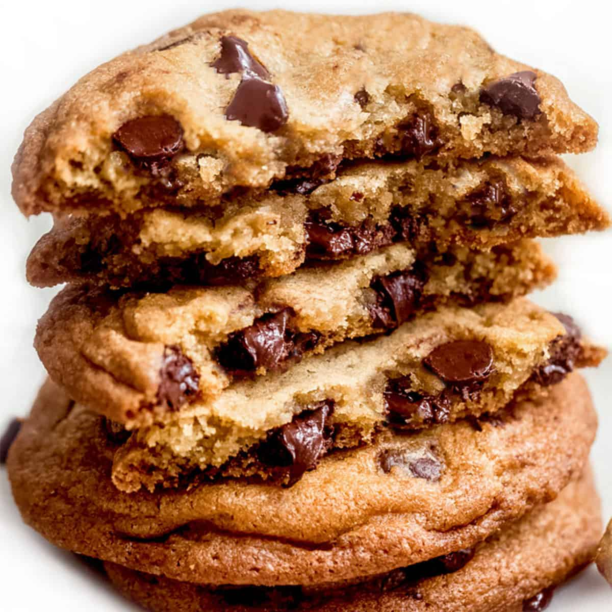

chocolate chip cookies

description:
There are a few secrets to the best classic, chewy chocolate chip cookies. Number one: Don’t use chips; instead, opt for a mix of milk or semisweet and dark chocolate chunks. The second is to let the dough rest overnight or longer for a more complex, toffee-like flavor. Lastly, use an ice cream scooper to get even-sized cookies every time. And that’s it! With these little tweaks, the result is a cookie that’s textured on the outside, and soft and gooey on the inside. Absolutely perfect!
Ingredients
- ½ cup granulated sugar(100 g)
- ¾ cup brown sugar(165 g), packed
- 1 teaspoon salt
- ½ cup unsalted butter(115 g), melted
- 1 egg
- 1 teaspoon vanilla extract
- 1 ¼ cups all-purpose flour(155 g)
- ½ teaspoon baking soda
- 4 oz milk or semi-sweet chocolate chunks(110 g)
- 4 oz dark chocolate chunk(110 g), or your preference
Preparation
- In a large bowl, whisk together the sugars, salt, and butter until a paste forms with no lumps.
- Whisk in the egg and vanilla, beating until light ribbons fall off the whisk and remain for a short while before falling back into the mixture.
- Sift in the flour and baking soda, then fold the mixture with a spatula (Be careful not to overmix, which would cause the gluten in the flour to toughen resulting in cakier cookies).
- Fold in the chocolate chunks, then chill the dough for at least 30 minutes. For a more intense toffee-like flavor and deeper color, chill the dough overnight. The longer the dough rests, the more complex its flavor will be.
- Preheat oven to 350°F (180°C). Line a baking sheet with parchment paper.
- Scoop the dough with an ice-cream scoop onto a parchment paper-lined baking sheet, leaving at least 4 inches (10 cm) of space between cookies and 2 inches (5 cm) of space from the edges of the pan so that the cookies can spread evenly.
- Bake for 12-15 minutes, or until the edges have started to barely brown.
- Cool completely before serving.
- Enjoy!